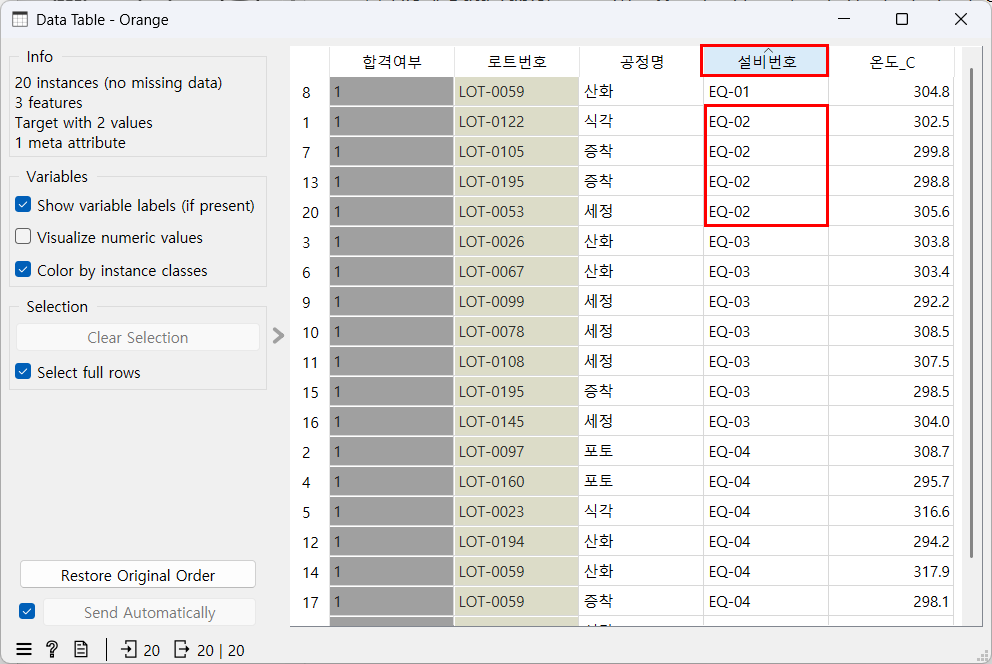
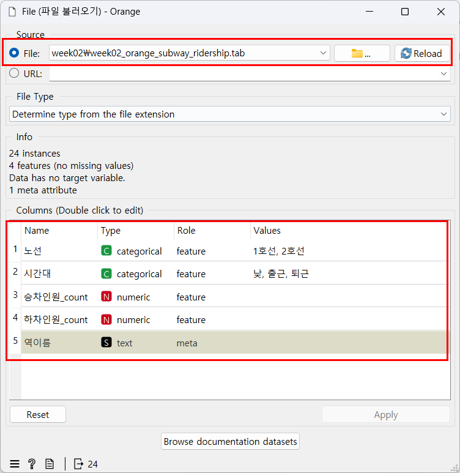
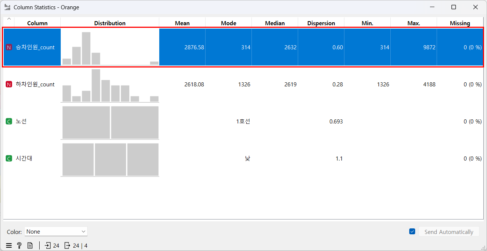
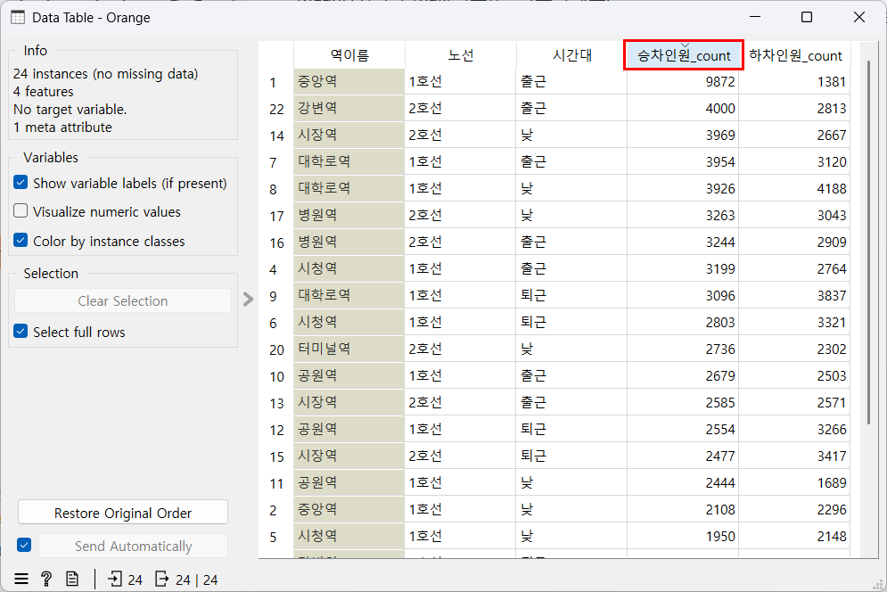
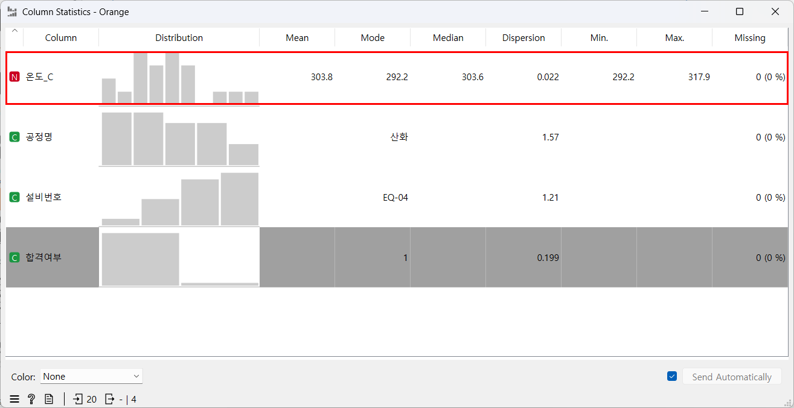

week02_1_subway_start.ows를 연다. File 위젯을 더블클릭해 week02_orange_subway_ridership.tab이 들어왔는지 확인하고 창을 닫는다.오늘의 질문: "여러 개의 측정값을 한 번에 담고, 각 값에 이름표까지 붙이려면 어떻게 해야 할까?"
오늘의 미션 — 팀장이 EQ-03 설비 온도 7개를 메모로 줬다. 최고·최저·평균을 정리해 보고하자. 가장 높은 온도와 가장 낮은 온도는 몇 도이고, 평균은 몇 도일까?
「신입 데이터 담당자의 10일」 둘째 날. 이야기 속 공장과 기록은 모두 교육용 가상 데이터다.

오늘 마지막에 Orange로 보게 될 표. 같은 설비의 기록끼리 모여 있다. EQ-03의 최고·최저·평균은 PART 1 노트북 7단계에서 직접 구한다.
len()으로 개수를 세고 append()로 값을 더할 수 있다.max()·min()·sum()으로 최고·최저·평균을 구할 수 있다.합격여부를 골랐을 때 막대 두 개가 보여 준 것은?[ ] 안에 값을 쉼표로 늘어놓은 묶음. 칸마다 번호가 붙은 약통과 같다.리스트[번호]로 값 하나를 꺼낸다. 번호는 0부터 센다. -1은 마지막 칸이다.week_temps = [21.5, 23.0, 30.5, 24.0, 22.5, 25.0, 23.5] # 월~일 낮 기온
print(week_temps)
print(week_temps[0]) # 첫 번째 값(월요일)
print(week_temps[2]) # 세 번째 값(수요일)
print(week_temps[-1]) # 마지막 값(일요일)[21.5, 23.0, 30.5, 24.0, 22.5, 25.0, 23.5] 21.5 30.5 23.5
노트북에서는 위 코드가 셀 두 개로 나뉘어 있다(리스트 만들기 / 꺼내기). # 뒤의 글은 주석이라 실행되지 않는다.
첫 칸(월요일)의 번호는 1이 아니라 0이다. 칸이 7개면 번호는 0~6번이다. 칸 위의 음수는 뒤에서부터 센 번호로, 마지막 칸이 [-1]이다.
week_temps[0:5]처럼 쓰면 0번 칸부터 4번 칸까지(5번 칸은 빠진다) 여러 칸을 한 번에 꺼낸다. 결과는 [21.5, 23.0, 30.5, 24.0, 22.5](평일 기온)다. 오늘 실습에는 쓰지 않는다.
검색어 파이썬 리스트 인덱스 0부터
파이썬을 처음 배우는 사람에게 리스트의 칸 번호(인덱스)가 왜 1이 아니라 0부터 시작하는지, 자의 눈금 같은 생활 비유로 3문장 이내로 설명해줘. 마지막 값을 -1로 꺼내는 방법도 알려줘.print(), type()처럼 이름 뒤에 괄호를 붙여 일을 시키는 것을 함수라고 한다. 괄호 안에 일감(값이나 리스트)을 넣는다. 노트북의 "함수 이름을 채우세요"는 괄호 앞 이름을 쓰라는 뜻이다.
len(리스트): 리스트에 값이 몇 개 있는지 센다. len은 length(길이)의 줄임말이다.리스트.append(값): 리스트 맨 뒤에 값을 하나 더한다. 장바구니에 물건 하나를 더 담는 것과 같다.cart = ["우유", "빵", "계란"]
print(len(cart))
cart.append("사과")
print(cart)
print(len(cart))3 ['우유', '빵', '계란', '사과'] 4
글자 값도 리스트에 담을 수 있다. append()는 리스트 이름 뒤에 점(.)을 찍고 쓴다.
cart.append("사과") 셀을 한 번 더 실행하면 사과가 또 들어가 5개가 된다(오류는 나지 않는다). 처음 상태로 돌리려면 위 셀 cart = [...]부터 다시 실행한다.
max() = 가장 큰 값, min() = 가장 작은 값, sum() = 모두 더한 값.sum(리스트) / len(리스트).print(max(week_temps))
print(min(week_temps))
print(sum(week_temps))
average = round(sum(week_temps) / len(week_temps), 1)
print(f"이번 주 평균 기온은 {average}도입니다.")30.5 21.5 170.0 이번 주 평균 기온은 24.3도입니다.
round(값, 1)은 소수 첫째 자리까지 반올림한다. 170.0 ÷ 7 = 24.28…이 24.3이 된다.["지민", 15, 3]은 "2번 칸이 반이었지?"를 외워야 한다. 딕셔너리는 칸 번호 대신 이름표(키)로 값을 찾는다. 이름표 붙은 사물함과 같다.{ } 안에 "이름표": 값을 쌍으로 적는다. 꺼낼 때는 딕셔너리["이름표"]처럼 대괄호에 키를 쓴다.student = {
"이름": "지민",
"나이": 15,
"반": 3,
}
print(student)
print(student["이름"])
print(student["반"])
# print(student["혈액형"]) # 없는 이름표 → KeyError{'이름': '지민', '나이': 15, '반': 3}
지민
3
| 리스트 | 딕셔너리 | |
|---|---|---|
| 괄호 | 대괄호 [ ] | 중괄호 { } |
| 값을 찾는 법 | 칸 번호(0, 1, 2 …) | 이름표(키) |
| 어울리는 값 | 같은 종류 여러 개(일주일 기온, 설비 온도) | 뜻이 다른 값 묶음(학생 한 명, 기록 한 건) |
검색어 파이썬 리스트와 딕셔너리 차이
파이썬을 처음 배우는 사람에게 리스트와 딕셔너리의 차이를 '번호 붙은 약통'과 '이름표 붙은 사물함'에 비유해서 설명해줘. 각각 어떤 값을 담을 때 쓰면 좋은지 예시를 하나씩 들어줘.딕셔너리 여러 개를 리스트에 담으면 "표"가 된다. 딕셔너리 하나가 표의 한 행이고, 키가 열 이름이다. 4차시에 배우는 표(Pandas)가 이 모양을 한 번에 다룬다. 오늘은 실행해서 모양만 본다.
friends = [
{"이름": "지민", "나이": 15, "동네": "서울"},
{"이름": "서준", "나이": 16, "동네": "부산"},
{"이름": "하은", "나이": 15, "동네": "대전"},
]
print(len(friends))
print(friends[1]["이름"])3 서준
friends[1]로 두 번째 행(딕셔너리)을 꺼내고, 이어서 ["이름"]으로 그 행의 이름을 꺼냈다.
오늘 반도체 데이터는 설비 온도 기록표 week02_python_basics_1.csv(20행, 교육용 가상 데이터)다. 공정 지도 ②~⑤(산화·포토·식각·증착)와 세정에서 설비 네 대(EQ-01~EQ-04)가 잰 온도다. 설비 4대가 여러 공정 기록을 함께 남겼다(교육용 가상 기록). 오늘 파이썬은 표 파일을 직접 읽지 않는다(4차시에 배운다). 그래서 노트북에는 표에서 옮겨 적은 값이 들어 있다. (노트북 6단계)
로트번호, 공정명, 설비번호, 온도_C, 합격여부. _C = 섭씨 도(1차시와 같은 규칙 — 밑줄 뒤가 단위).이 절에서는 설비 EQ-02의 기록을 본다. 오늘의 미션인 EQ-03은 실습에서 직접 푼다.
일주일 기온과 같은 모양으로, EQ-02 온도 리스트의 개수·최고·최저를 구하고 평균을 문장으로 보고하면?
eq02_temps = [302.5, 299.8, 298.8, 305.6]
print(len(eq02_temps))
print(max(eq02_temps))
print(min(eq02_temps))
eq02_avg = round(sum(eq02_temps) / len(eq02_temps), 1)
print(f"EQ-02 평균 온도는 {eq02_avg}도입니다.")4 305.6 298.8 EQ-02 평균 온도는 301.7도입니다.
공장 말로 읽기: 이 연습용 표에서 EQ-02 기록 4건의 온도는 298.8~305.6도로 하나로 같지 않다(4건에는 식각·증착·세정 기록이 섞여 있다). 값이 여러 개일 때는 하나만 고르지 않고 최고·최저·평균으로 요약해 말한다.
표의 첫 행(LOT-0122, EQ-02, 302.5도)을 학생 정보처럼 딕셔너리로 옮기고, 온도만 꺼내면?
first = {"로트번호": "LOT-0122", "설비번호": "EQ-02", "온도_C": 302.5}
print(first["온도_C"])302.5
공장 말로 읽기: 표의 열 이름이 딕셔너리의 키가 된다. 키 "온도_C"는 열 이름과 글자 하나까지 같아야 한다.
검색어 반도체 로트 뜻
반도체 공장에서 말하는 '로트(lot)'가 무엇인지 반도체를 처음 배우는 사람에게 웨이퍼를 피자 한 판에 비유해서 3문장으로 설명해줘. 공장이 왜 웨이퍼를 로트로 묶어 관리하는지도 알려줘.파이썬에서는 max()·min()·sum()을 하나씩 썼다. Orange의 Column Statistics는 표의 모든 숫자 열에 대해 평균·최고·최저를 한 화면에 보여 준다.
| 위젯(화면 이름) | 어느 묶음에 있나 | 한국어 뜻 | 오늘 하는 일 |
|---|---|---|---|
Column Statistics | Data | 열 통계 | 오늘 새 위젯. 열마다 Mean(평균)·Min.(최저)·Max.(최고)·Missing(빈칸 수)을 한 줄로 본다 |
노선·시간대·설비번호 같은 글자 열도 한 행씩 나온다. 글자는 평균을 낼 수 없어서 Mean 칸이 비어 있다. 화면이 잘못된 것이 아니다.가상 도시의 지하철 두 노선, 역 8개에서 하루 세 시간대(출근·낮·퇴근)에 타고 내린 사람 수를 센 기록이다(24행, 교육용 가상 데이터). 열은 역이름, 노선, 시간대, 승차인원_count, 하차인원_count다. _count = 센 사람 수(명).
week02_1_subway_start.ows를 연다. File 위젯을 더블클릭해 week02_orange_subway_ridership.tab이 들어왔는지 확인하고 창을 닫는다.
Column Statistics를 끌어 와 File과 잇고 더블클릭한다. 승차인원_count 행의 Mean과 Max.를 읽는다.
역이름은 이름표 역할만 하는 참고 열(meta)이라 Column Statistics에 나오지 않는다.Data Table을 잇고 더블클릭한다. 승차인원_count 열 머리를 두 번 눌러 큰 값부터 정렬한다. 맨 위 행은 어느 역·시간대일까?
PART 1에서 값을 옮겨 적은 그 표다. 공정 지도 ②~⑤(산화·포토·식각·증착)와 세정에서 남긴 설비 온도 기록이다(교육용 가상 데이터).
week02_2_temps_start.ows를 연다. File을 더블클릭해 week02_python_basics_1.tab이 들어왔는지 확인한다.Column Statistics를 잇고 온도_C 행의 Mean과 Max.를 읽는다.
Data Table을 잇고 설비번호 열 머리를 한 번 눌러 정렬한다. 같은 설비의 행이 한데 모인다. EQ-02 행을 찾는다.공정명 열을 보면 한 설비에 여러 공정 기록이 섞여 있다. 설비 4대가 여러 공정 기록을 함께 남긴 교육용 가상 기록이라서다(실제 공장은 보통 설비마다 맡는 공정이 정해져 있다).eq02_temps가 이 표에서 옮겨 온 값이다.합격여부와 참고 열 로트번호가 앞에 온다.week02_1_subway_done.ows, week02_2_temps_done.ows를 열면 완성된 연결과 정렬을 볼 수 있다. File에 빨간 글씨가 보이면 데이터 파일을 찾지 못한 것이니 강사에게 알린다.
2차시 실습지를 연다. 다섯 문제를 혼자 풀고, 정답은 접힌 상자를 열어 확인한다.
-1) 기록을 찾아, 그 온도를 표 전체 평균·문제 3의 EQ-04 평균과 비교한다.[ ] 안에 여러 값을 순서대로 담은 묶음.eq02_temps = [302.5, 299.8, 298.8, 305.6]week_temps[0](첫 값), week_temps[-1](마지막 값)[7]이 마지막이라고 생각하기 쉽다. 마지막은 [6] 또는 [-1]이다.{ } 안에 "이름표(키): 값" 쌍을 담은 묶음.first["온도_C"] → 302.5{ }, 꺼낼 때는 [ ]다.설비번호 열의 EQ-01~EQ-04| 파일 | 크기 | 쓰는 곳 |
|---|---|---|
week02_python_basics_1.csv | 20행 5열 | 설비 온도 기록표. 파이썬은 값을 옮겨 적어 쓰고(EQ-02, EQ-03, EQ-04), Orange는 orange/ 폴더의 같은 이름 .tab을 연다 |
week02_orange_subway_ridership.csv | 24행 5열 | Orange 워밍업 — 지하철 역별 승하차 |
두 파일 모두 교육용 가상 데이터다. 열 설명은 데이터 설명서에 있다. 일주일 기온·장바구니·학생 정보·친구 정보는 코드 속에 지어낸 값이다.
week_temps에서 week_temps[7]을 쓰면 IndexError: list index out of range가 난다. 번호는 0~6번까지다. 마지막 값은 [-1]로 꺼낸다.
student["혈액형"]처럼 없는 키를 쓰면 KeyError: '혈액형'이 난다. 오타나 띄어쓰기 하나만 달라도 같은 오류다. print(student)로 키를 먼저 확인한다.
student = ["이름": "지민"]처럼 대괄호로 만들면 SyntaxError: invalid syntax가 난다. 리스트는 [ ], 딕셔너리는 { }로 만든다. 꺼낼 때는 둘 다 [ ]를 쓴다.
eq02_temps(확인 1)와 eq03_temps(실습)는 서로 다른 상자다. 결과를 보기 전에 변수 이름부터 확인한다.
len()·max()·min()·sum()으로 요약하고, 딕셔너리로 이름표를 붙였다. EQ-02 온도 4개는 최고 305.6 · 최저 298.8 · 평균 301.7이었다.나머지 문항은 실습지와 수업 뒤 퀴즈로 복습한다.
week_temps = [21.5, 23.0, 30.5, 24.0, 22.5, 25.0, 23.5]일 때 print(week_temps[1])의 출력은?23.0. 인덱스는 0부터 세므로 [1]은 두 번째 값(화요일)이다.student에 없는 키로 student["혈액형"]을 실행하면?KeyError: '혈액형'이 난다. IndexError는 리스트에서 없는 칸 번호를 쓸 때 난다.ChatGPT에 이렇게 물어봤다. (노트북 8단계)
파이썬 리스트 eq03_temps = [303.8, 303.4, 292.2, 308.5, 307.5, 298.5, 304.0]에서 295 이상 305 이하 범위를 벗어난 값만 골라 개수와 함께 출력하는 짧은 코드를 만들어 줘.아래는 받은 코드의 예시다. for와 if는 3차시에 배운다. 지금은 실행해서 결과만 확인한다. 295~305는 이 과정에서 쓰는 연습용 기준이다.
eq03_temps = [303.8, 303.4, 292.2, 308.5, 307.5, 298.5, 304.0]
out_of_range = []
for t in eq03_temps:
if t < 295 or t > 305:
out_of_range.append(t)
print(f"범위 밖 온도: {out_of_range}")
print(f"범위 밖 개수: {len(out_of_range)}개")노트북 7단계를 마친 뒤 실행하고, 결과는 아래 버튼으로 확인한다(EQ-03의 최저·최고가 들어 있다).
범위 밖 온도: [292.2, 308.5, 307.5] 범위 밖 개수: 3개
append()와 len()이 코드 안에 들어 있다. 빈 리스트 []를 만들고 조건에 맞는 값만 하나씩 더했다.
week_temps 값을 이번 주 내가 사는 곳의 기온(일기예보에서 본 낮 기온)으로 바꿔 다시 실행하고, 3단계의 최고·최저·평균 문장이 어떻게 바뀌는지 확인한다.
me = {"좋아하는 음식": "...", "사는 동네": "...", "형제 수": 0}처럼 나에 대한 딕셔너리를 만들고, 키 하나로 값을 꺼내 출력한다. 개인정보(실명·주소·연락처)는 쓰지 않는다.
eq02_temps = [302.5, 299.8, 298.8, 305.6] → 개수 4 · 최고 305.6 · 최저 298.8 · 평균 301.7.{"로트번호": "LOT-0122", "설비번호": "EQ-02", "온도_C": 302.5} — 열 이름이 키가 된다.다음 미션 — 기록 30건을 하나씩 보는 대신, 온도 규칙으로 자동 판정해 주는 작은 도우미를 만들자.
오늘은 리스트에 담은 값을 한꺼번에 요약했다. 다음에는 값을 하나씩 꺼내 판단하는 for와 if를 배운다. 오늘 Data Table에서 눈으로 찾던 일은 Orange의 Select Rows(행 고르기)가 조건으로 대신한다.